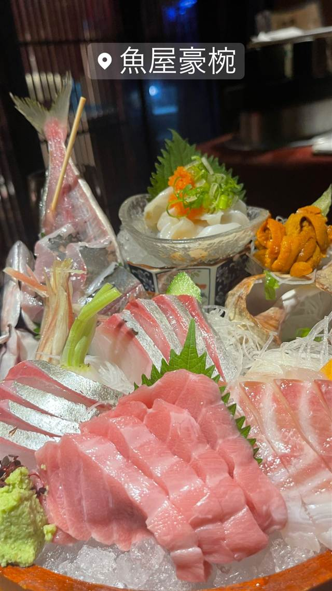

魚屋豪椀
築地直送の鮮魚と活き車海老の踊り食いが名物
魚屋豪椀
渋谷・宇田川町にある海鮮居酒屋。築地から毎日直送する鮮魚を使い、活き車海老の踊り食いや、ウニ・毛蟹などを盛り込んだ豪快な刺身盛りが名物。パワフルな店員による活気ある雰囲気も持ち味。
TRIVIA
豆知識
- 刺身のネタを毎日築地から直送している
REVIEWS
世間の評判
3.51食べログ
分厚い刺身と車海老の踊り食い
- 刺身は一切れが分厚くボリュームがあるという声が多い
- 車海老の踊り食いなど新鮮な魚介を評価する声が多い
- 気さくで元気なスタッフの接客を評価する声が多い
- 人気店で満席になりやすく予約が必須という声がある
食べログ 口コミ473件
| 看板 | 活き車海老の踊り食い、刺身盛り（ウニ・毛蟹など） |
|---|---|
| こだわり | 鮮魚を毎日築地から渋谷へ直送し、厚切りで提供する刺身へのこだわり。 |
| どこから | 都心 |
| 行くなら | 予約必須 |
| 営業時間 | 月〜日 17:00-23:30 |
| 予算 | 夜 ¥4,000～¥4,999 |
| 場所 | 渋谷 東京都渋谷区宇田川町付近（東急ハンズ近く） |
| メモ | 渋谷駅から徒歩7分、宇田川町に立地。少人数から大人数まで対応する活気ある店内。 |
食べたもの：刺身盛り
NEARBY
近い店・同じ系統の店
-
 パスタ 渋谷
KURA 渋谷店
元プロゴルファーら異業種出身者が始めた、もちもち生パスタ50種以上
昼 ¥1,000～¥1,999 夜 ¥2,000～¥2,999
パスタ 渋谷
KURA 渋谷店
元プロゴルファーら異業種出身者が始めた、もちもち生パスタ50種以上
昼 ¥1,000～¥1,999 夜 ¥2,000～¥2,999
-
 ベトナム 渋谷駅
ミス・サイゴン（MISS SAIGON）
ベトナム人スタッフが作る野菜たっぷりのフォーとバインセオ
夜 ～¥5,999
ベトナム 渋谷駅
ミス・サイゴン（MISS SAIGON）
ベトナム人スタッフが作る野菜たっぷりのフォーとバインセオ
夜 ～¥5,999
-
 台湾 恵比寿
七一飯店
週1回だけの営業だった名残の店名、看板は魯肉飯
昼 ¥1,000～¥1,999 夜 ¥1,000～¥1,999
台湾 恵比寿
七一飯店
週1回だけの営業だった名残の店名、看板は魯肉飯
昼 ¥1,000～¥1,999 夜 ¥1,000～¥1,999
-
 コーヒー 渋谷
Café Kitsuné Shibuya
パリ発ブランドのカフェ、狐にちなむ名を持つバゲットサンド
昼 ¥1,000～¥1,999 夜 ¥1,000～¥1,999
コーヒー 渋谷
Café Kitsuné Shibuya
パリ発ブランドのカフェ、狐にちなむ名を持つバゲットサンド
昼 ¥1,000～¥1,999 夜 ¥1,000～¥1,999
-
 コーヒー 渋谷駅
Roasted COFFEE LABORATORY 渋谷神南店
店内焙煎の豆で淹れる「MADE IN SHIBUYA」のコーヒー
昼 ¥1,000～¥1,999 夜 ¥1,000～¥1,999
コーヒー 渋谷駅
Roasted COFFEE LABORATORY 渋谷神南店
店内焙煎の豆で淹れる「MADE IN SHIBUYA」のコーヒー
昼 ¥1,000～¥1,999 夜 ¥1,000～¥1,999
-
 カフェ 渋谷
JINNAN CAFE 渋谷店
ドラマや映画のロケ地に頻繁に使われるとろけるスフレパンケーキ
昼 ¥1,000～¥1,999 夜 ¥1,000～¥1,999
カフェ 渋谷
JINNAN CAFE 渋谷店
ドラマや映画のロケ地に頻繁に使われるとろけるスフレパンケーキ
昼 ¥1,000～¥1,999 夜 ¥1,000～¥1,999
ONSEN & SAUNA